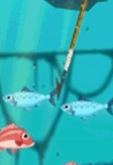
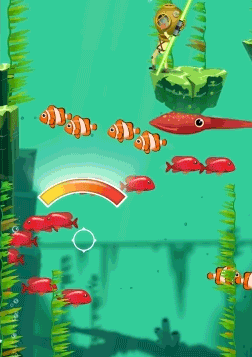

<!DOCTYPE html>
<html lang="en">
    <meta charset="utf-8">
    <title>GlitterBombGames: Developer Blog</title>
    <meta name="description" content="">
    <meta name="viewport" content="width=device-width, initial-scale=1.0, shrink-to-fit=no">
    <link href="../../css/normalize.css" rel="stylesheet" media="all">
    <link href="../../css/styles.css" rel="stylesheet" media="all">
    <link rel="stylesheet" href="../../css/base-min.css">
    <link rel="stylesheet" href="../../css/grids-core-min.css">
    <link rel="stylesheet" href="../../css/grids-min.css">
</html>

<body style="margin:auto">
    **Fisherboy technical document**
    <small>01 april 2018</small>

Our first project, “Fisherboy” (امیرو ماهی بگیر) game is almost finished and we have managed to launch it on [CafeBazar](https://cafebazaar.ir/app/com.glitterbombgames.fisherboy/?l=en). There is still also much more work to be done on this game, like Online matches, new environments and other improvements before we can release it on international markets like Apple store and Google play.  
This article is just a brief overview of some of the tech that we used in this little 2D shooting/platformer game.

# Introduction
Currently we are a very tiny team _(actually one artist and one programmer)_ focusing on simple and casual mobile games.  
Getting to the point, unlike many indie teams, we decided to make our own tech and move forward step by step on the next projects in order to get more experienced and expand our abilities, so we could make unique and awesome games in the future.
This article is meant to showcase some of our tech that we made almost from scratch to make this game. I have to say that _there is nothing new or special about our tech_, so this document is meant for any game developer that is curious about any effects or tech that is used in this game, the techniques described here is probably used in other 2D games before.  

# Engine
For engine and underlying tech, I decided to make our own from scratch. Because I was relatively experienced with engine design and architecture, and I think _If you have the experience and time_ to make your own 2D engine, you should do it and It's completely rational for small games to roll your own tech. But that is a discussion for another article maybe.

The engine or for a better word, framework, is developed open source and it's on [github](https://github.com/septag/termite). It's currently a work in progress and not very usable by other developers, because of lack of documentation and examples. It is written during a 1 year period along side the game itself, contains many other open-source libs and utilities.  

The main factor of this engine is it's lightness and tailoring toward our specific game, it builds quickly, consumes much less memory and disk space than most of the general and gigantic engines like Unity and Unreal, and runs on many platforms like PC, iOS and android.

Here are some brief features that I've implemented for this engine in that 1 year period:  

- Forked base library and containers from the great [bx](https://github.com/bkaradzic/bx). I think C++ developers should stay away from _stl_ libraries wherever they can, especially the classes that use memory allocation.
- Uses small subset of C++ code, very close to C. obviously, because modern C++ sucks big time. I actually preferred to write the code in pure C, but some C++ features like templates (used sparsely in code like containers), and some other simple features like math operators, lambda callbacks, ... really come in handy and helps the code readability.
- Multi-threaded Fiber based task scheduler (inspired by Naughty dog talk - GDC 2015)
- Hot-Loading support for all assets
- Tag based memory pools and other memory allocators, the runtime almost never allocates from heap during the game.
- Sprites and Sprite sheet, SpriteMesh support for TexturePacker files
- ImGui wrapper for tools development 
- Remotery profiler integration
- Box2D physics
- Real 2D rendering (unlike fake 2D engines like Unity)
- Dynamic plugin system
- Event dispatcher, command system, async scene loader, ...

# Tools

## Editor
The main tool that I built for the game is the editor, which is not generic at all and is tailored for this game only. It's relatively pretty fast compared to generic editors like unity and unreal.  
It has undo/redo capability and our artist can build and populate levels with decoration and waves very quickly (about an hour for each level).  
Level designer can also switch between gameplay and edit mode instantly and setup/test fish waves. Like many other game developers I believe that iteration times and good tools are the most important things in gamedev process and we will continue improving and customizing our tools in the future, because currently we are still lacking a lot of stuff (decent UI tools/particle system editor/fast scripting/animation/... ouch!)

    ![Figure [tools]: Editor workflow](fisherboy-editor.gif)

!!!     
    Some aspects of level design are also procedurally placed, like the walls, ground and background decorations.

## Texture tools
We made ETC2 texture converter tool, that checks the whole texture assets for changes and encodes them to ETC2, then compress them using LZ4 compression.  
This tool enabled us to increase graphics runtime speed on devices that support ETC2 (OpenGL-ES3+) and lower disk/apk size and memory requirements:  

![Figure [tools]: Texture packing command-line tool](texture-tool.jpg)

On the devices that doesn't support ETC2 textures, we have to read the files and decode them during load time to normal RGBA8 format, which reduces load times on these devices significantly. At first I implemented a texture caching to improve load times on the next run, but It had some failures on some test devices and I had to ditch it, near the launch dates so I could investigate the problem more thoroughly.

## Photoshop tools for GUI
For GUI layout, we made a simple plugin for photoshop that exports the layout, position and sizes of layers into a C++ header file, so the artist makes the layout in photoshop and export it to a C++ header file that I use to enumerate all page elements. I know we had to make a more decent UI tools, but we didn't have enough time and experience to craft a nice UI editing tools and libraries, this was the fastest approach we could come up with and our artist could instantly work with it.

## Level packer/encoder
Our levels are plain Json files, so in order to prevent the players from modifying levels, We made a tool to encode (AES-128) and compress all the levels for our release version.

## TexturePacker
We use [TexturePacker](https://www.codeandweb.com/texturepacker) tool by _CodeAndWeb_ to make our sprite sheets and most of UI assets.

## RenderDoc
We used [RenderDoc](https://renderdoc.org/) to debug our graphics frames and API use, which is an awesome tool.

## PackPixels tool
We made a tool to pack some special Mask texture into one 8-bit channel. with this tool we could pack 3 kinds of different data (Mask, NormalMap, Alpha) into one RGBA8 texture. I'll get to for a more detailed explanation later. see Figure [pack_tex]

# Graphics
Although _'fisherboy'_ is a little casual 2D game for mobile (which we have a lot of limitations in terms of hardware power), we did some tricks and post process stuff to make the graphics more interesting and make a more immersive underwater cartoony style environments.

## Layers
All scenes consist of six main layers , _Far_, _Background_, _Gameplay_, _Close_, _Mask_ and _HUD_ layers, each layer contain their own set of decoration graphics, render speed, and resolution.

![Figure [graphics]: Scene rendering and layers](layers.jpg)

- We start off from rendering the _Far_ and _Background_ layer at half-resolution and 30hz. 
- Apply ocean gradient shader, which we fetch from our artist-made texture, the X-axis in texture defines the level we are in, the Y is the depth. So each level will have kind of a unique underwater colors.
- Apply water distortion shader, we do not apply this effect on gameplay layer because it reduced the gameplay experience and is kind of distracting for the player.
- Render mask layer, mask layer contains the data that we need to cull part of some objects (like emulating spear heads stuck in the rocks) and apply some effects like caustics to specific parts of the scene. 
- When rendering the gameplay layer, we use the mask generated in the previous section and mix all the effects together to get the final result. We also render this layer at full resolution in 60 Hz.
- Finally we render the UI and HUD on top of it.

## Effects and Optimizations

### Sprite Meshes
Almost all the sprites in the scene is _SpriteMesh_ in order to reduce GPU fill-rate and overdraw, apparently it isn't a problem on PC hardware, but on mobile I had to do this optimization, due to our native HD (1080p) resolution sprites and many sprite overdraws and layers in the scene. Here's sprites debug mode on gameplay layer:  

![Figure [graphics]: Mesh sprites](sprite_mesh.gif)

### Trails
All sprites with _trails_ uses a common trail system and renderer, much like a particle system.

### Vegetation
Vegetation and decoration uses _SpriteCache_ optimization, where all static sprites are batched together on load time in order to reduce draw calls. On load time, all the geometry in the same area (about one page of player movement in vertical range) is batched into one bigger chunk and saved into GPU memory for later draws.

### Crystals
For crystals (Chapter #3), We used our _Pack Pixels Tool_ mentioned earlier to pack masks and normal maps into one RGBA8 texture. We have two channels for masks, Red (for caustics, shadows, ...)  and Green (Visibility occlusion), and normal maps have 3 channels (XYZ vector). Because we are targeting OpenGL2-ES hardware, we can't use bitwise operations inside the shader to pack pixels. What I did was using the fact that masks are kind of a very low precision pixel data that is either RED=255 or GREEN=255 or both, so we can convert the RGB color to HSV and save the Hue value in one channel and it will represent full RG values after decode with full precision and very low overhead, here's a code snippet of unpacking the RG colors from Hue value inside the GLSL shader:  

~~~~ C
    lowp float hue = texture2D(u_texture, v_texcoord0).z;
    mediump float px = abs(fract(hue + 1.0)*6.0 - 3.0);
    mediump float py = abs(fract(hue + 2.0/3.0)*6.0 - 3.0);
    vec3 mask = vec4(clamp(px - 1.0, 0.0, 1.0), clamp(py - 1.0, 0.0, 1.0), 0, alpha);
~~~~

For normal packing, I used the most convenient normal map packing, which stores two normal map components XY and rebuilds Z in shader with the ```nz = sqrt(1.0 - nx^2 - ny^2)``` formula.

After packing the textures we have all the data to render the 2D crystal effect inside the game, by a simple distort by normal map shader:

![Figure [pack_tex]: Texture packing convention for lighting and refraction](pack_textures.png)

And here's final effect inside the game:

![Figure [graphics]: Refraction effect for crystals](crystals.gif)


### Lighting
![Figure [graphics]: Per-pixel 2D Lighting](lighting.gif) For lighting we used the same art and tools pipeline from _Crystals_ rendering for normal maps (see above). The cave levels in the final chapter, are dark, and the player has this headlight which illuminates fishes and environment.. By looking at what we have, we already had normal maps for static environment like Platforms and walls, so we could do simple normal map reconstruction and n_dot_l diffuse lighting for those objects. But for dynamic stuff like fish and player, we didn't have enough data to light them, for those entities, we used a dark ambient and a simple spotlight culling in the shader. As you can see in the clip below, there are also some illuminated entities in the scene which glows in the dark. For those objects, we tag them and draw another 'unlit' sprite on top of it to simulate this effect.

### Bubbles
![Figure [graphics]: Perlin noise texture](perlin.gif) Bubbles are our special kind of particles that is optimized for their purpose, we can render about 1000~1200 bubbles (total particles can reach up to 1600~2000 in some frames) during the game and maintain 60fps, even on a 3-4 year old mid-range mobile devices. We can even get higher with SIMD optimizations (planned!). For more realistic and random behavior, the bubble movements are offseted by a pPerlin noise texture inside the shader, where we choose a random base line for each bubble (X coord) and move up in texture (Y-coord) during the lifetime of a bubble to offset it's position:  

### Water surface
For water surface effect, I made a simple sine wave generated mesh with random parameters. For physics I made spring like rigid bodies that are connected, as seen in the picture below:  
![Figure [graphics]: Water surface](water-surface.jpg).

<p> .. </p>

![Figure [graphics]: Water surface dynamics](water_effect.gif) Connecting physics to graphics mesh, helped us make an illusion of water dynamics (I know it's springy and not very precise but it's good enough) when the player jumps into water. The boat the buoy are also attached to the water surface, so they move according to water surface movement. Here's the amplified effect:

### God rays
![Figure [graphics]: Godrays](water_godray_fx.gif)  God rays uses two ray sprites, I used a simple shader on them to emulate the effect of caustics on the rays. What the shader does is it receives 4 sample points of the waves and _smoothsteps_ the god ray sprite alpha channel to animate them. For _Dust in the light_ effect, We used the same bubbles that are rendered in background and lighten them with god rays to simulate this kind of effect. 

### Blood and Ink
For blood and ink effects, We implemented the _metaballs_ effect mixed with our own particle system. For details, check out this [tutorial](http://patomkin.com/blog/metaball-tutorial/) that implements the smiliar effect in Unity engine. It added some rendering overhead due to using another render target for additive blending, but we really liked the effect and how it generates nice results under different occasions.

<div class="pure-g">
    <div class="pure-u-1-2" style="text-align: center">
        
    </div>
    <div class="pure-u-1-2">
        
    </div>
</div>

# Multithreading
I have approached rather cautiously toward multi-threading stuff in this game, mainly because of it's complexity and my lack of enough experience with multi-threading. For the engine, I have developed a job scheduler based on fibers which was Naughty Dog engineers idea, with fiber based task scheduler, parallelizing the code becomes much easier and you can swap and borrow tasks for each thread, which makes a tighter job dispatching for future and heavier works. I'll describe this in more detail in another article.
Unfortunately the ECS system I designed wasn't capable of parallelizing in general and I had to make many changes, and the game didn't need that much power to be multi-threaded anyways. Here are some spots in the code that we used multi-threading to boost up performance:

- _IO_: Loading files from disk and android Asset manager using multiple threads
- _Texture decoding_: Decoding ETC2 textures on OpenGL-ES2 happens in parallel with asset loading using job dispatcher.
- _Scene Culling_: Visible entities in the view may rise up to 150~200 objects, and the whole scene may have up to 1000 entities that needs to culled for the view. On PC, this is nothing, but on mobile ARM cpus, deeper inspections of profiler showed that culling and object classification in heavy levels takes about 4-5ms, which hurts our 60fps target performance. So I had to jobify it and do it in another thread. By using this method, in the current frame, we do culling of the frame, and render the results of the previous frame. For example, If are in frame #4, we do culling of frame #4 in another thread during render, and render the culling results of frame #3 at the same time.

# Backend
In order to tune the performance on various android devices and maintain decent frame rates (60fps ideally), we did an experiment and decided to control the quality and rendering resolution by making calls to our web service. When the user launches the game for the first time, it sends it's device information and resolution to our server, we keep all these devices in our database, later, when player plays the game, engine performs performance monitoring in background and sends it's data to our server, the median of all the performance scores of a particular device is stored for each device, and then the backend decides what quality/resolution should be set based on a heuristic rule. The next time any user launches the game with the same device, the new quality/resolution is fetched from the server and changes the game resolution.  
This method has some pros and cons, we had to do this because we couldn't reason on many android device performances in offline mode and also we needed some performance data on how the game runs on different devices. For example, Nexus5 can handle the game in 1080p resolution at 60fps without any hiccups, but after a while, the Adreno gpu on these devices gets hot and the performance starts to suffer, but plays flawlessly in 720p resolution without getting hot. I also couldn't query device temperature and cpu throttling state on many devices because of many different SoCs and implementations. So what we had to was some statistical approach to the problem. After a while many android devices will be registered to the database and their qualities in the database will be optimized (Currently we have about 1900 device models registered !!). We also can manually change resolutions on our server for a specific device and fine tune them for better performance.  

![Figure [mt]: Backend](resolution_backend.png)

_Adaptive resolution scaling_ is another new topic with is gaining popularity, I have to do more research on that, because the smooth transition between resolutions and minimizing memory consumption of our GPU buffers is a bit tricky. I may try experimenting with this method on the next project.

# Links

- [Fereshteh Poorkazem](https://www.artstation.com/ferre): _fisherboy_ Game artist, animator and level designer
- [Bgfx](https://github.com/bkaradzic/bgfx) by Branimir Karadžić
- [imgui](https://github.com/ocornut/imgui/) by Omar aka ocornut
- [Remotery](https://github.com/Celtoys/Remotery) by Don Williamson
- And all other developers and open-source projects that helped us make this thing happen
                        
<br>
<br>
(insert ../../footer.md.html here)
</body>
    
<!-- Markdeep: --><style class="fallback">body{visibility:hidden;white-space:pre;font-family:monospace;}</style><script src="../../js/markdeep.min.js" charset="utf-8"></script><script src="https://casual-effects.com/markdeep/latest/markdeep.min.js" charset="utf-8"></script><script>window.alreadyProcessedMarkdeep||(document.body.style.visibility="visible")</script>
